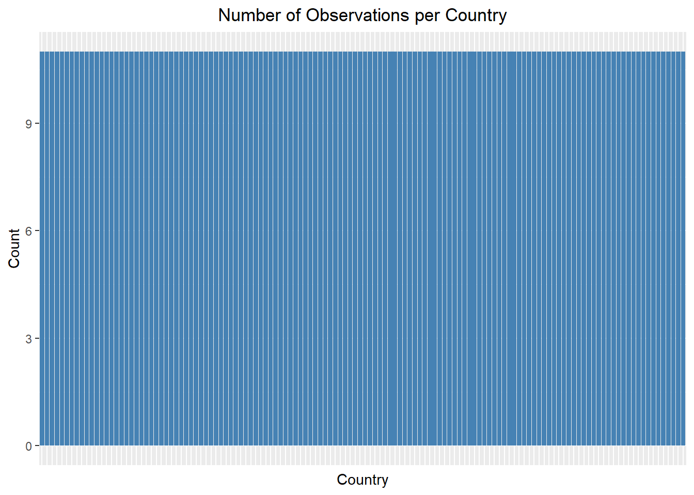
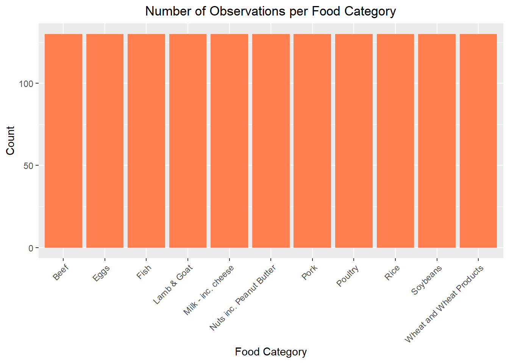
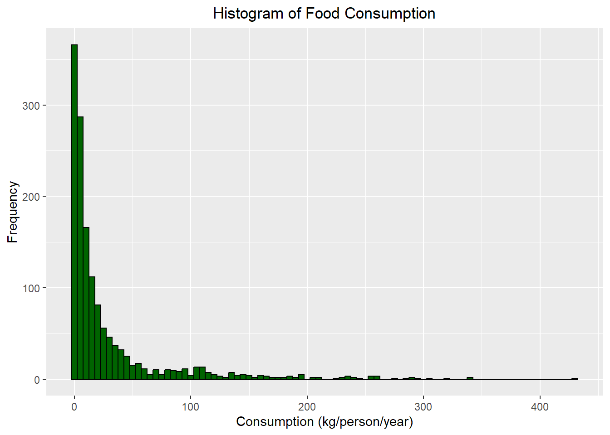
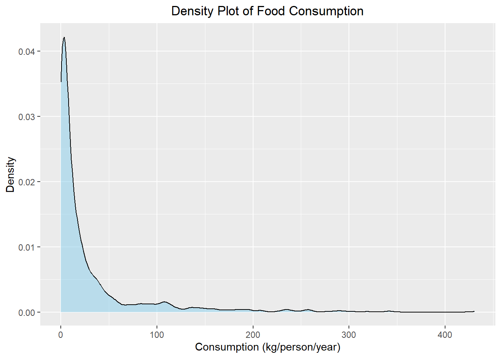
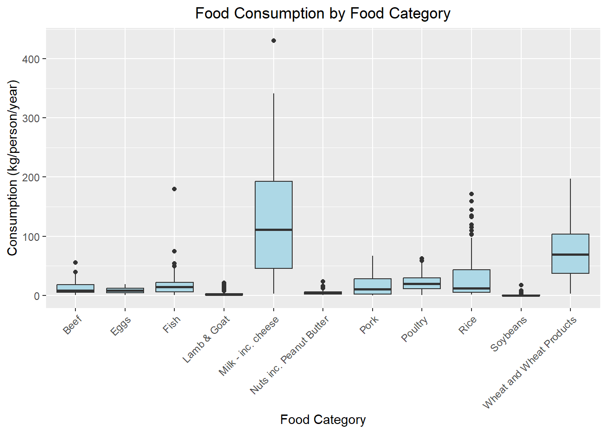
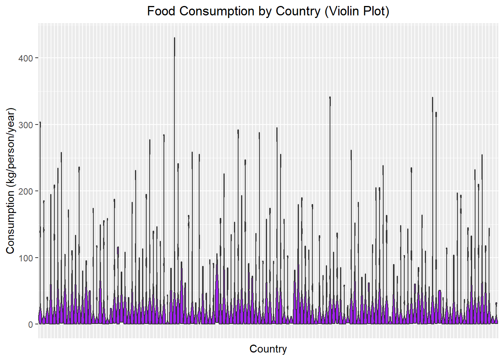
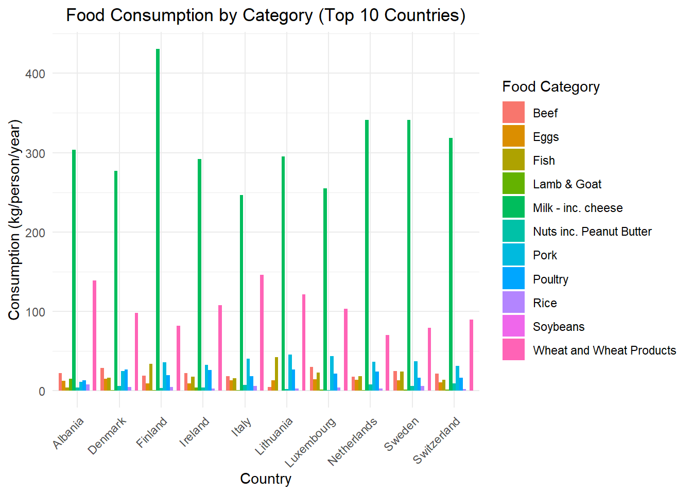
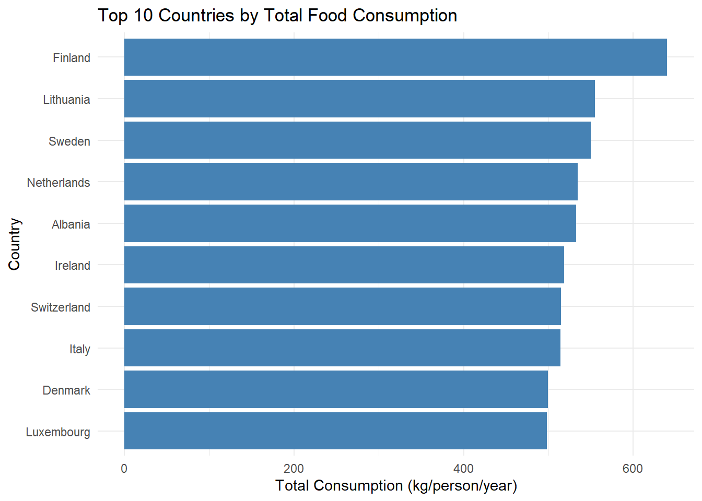
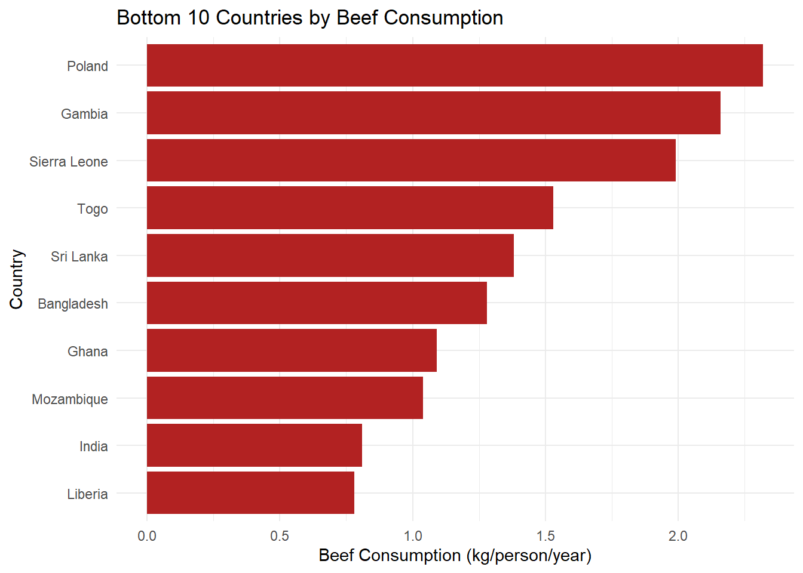

7 Exam_1
7.1 1 Background
I will work with Food consumption and CO2 emissions dataset used in week 8 of year 2020 in the tidy tuesday project.
Research question: What does the consumption of each food category in each country look like?
7.2 2 Install packages
You don’t need to install pakcages in code chunks because when you rin the code it will keep installing it. You only need to install the needed packages in the console once and then cal them using library
7.3 3 Load packages
7.4 4 Get Data
the above code chunk loads the data from tidytuesdsy on the day 2020-02-18 and gives it a new name
7.5 5 understand Data
List a minimu of three initial steps that should be carried after loading the above dataset and the corresponding R functions to accomplish each
# A tibble: 6 × 4
country food_category consumption co2_emmission
<chr> <chr> <dbl> <dbl>
1 Argentina Pork 10.5 37.2
2 Argentina Poultry 38.7 41.5
3 Argentina Beef 55.5 1712
4 Argentina Lamb & Goat 1.56 54.6
5 Argentina Fish 4.36 6.96
6 Argentina Eggs 11.4 10.5 [1] 1430 4# A tibble: 6 × 4
country food_category consumption co2_emmission
<chr> <chr> <dbl> <dbl>
1 Bangladesh Eggs 2.08 1.91
2 Bangladesh Milk - inc. cheese 21.9 31.2
3 Bangladesh Wheat and Wheat Products 17.5 3.33
4 Bangladesh Rice 172. 220.
5 Bangladesh Soybeans 0.61 0.27
6 Bangladesh Nuts inc. Peanut Butter 0.72 1.277.6 6 explore Data
What are the units of observations? The amount consumed and the CO2 emission from each food category
How many categories are there? 11 How many countries are there? 130
7.7 7 Understand Variables Individually
How many variables does the grand research question involve? 3
List all the appropriate variables with one appropriate plot type for each variable
1: country: Bar graph 2. Food Group: bar graph 3. amount consumer: denisty plot/histogram
Code
library(ggplot2)
# 1. Bar graph for Country
ggplot(fc, aes(x = country)) +
geom_bar(fill = "steelblue") +
labs(title = "Number of Observations per Country", x = "Country", y = "Count") +
theme(axis.text.x = element_blank(), # Hide axis labels since there are many countries
axis.ticks.x = element_blank(),
plot.title = element_text(hjust = 0.5))
Code

Code
# 3. Histogram and Density Plot for Consumption
# Histogram
ggplot(fc, aes(x = consumption)) +
geom_histogram(binwidth = 5, fill = "darkgreen", color = "black") +
labs(title = "Histogram of Food Consumption", x = "Consumption (kg/person/year)", y = "Frequency") +
theme(plot.title = element_text(hjust = 0.5))
Code

7.8 8 Understand Consumption
List one appropriate plot for each bivariate viz and what should go into their aesthetic
Overall food consumption/ food category Plot Type: boxplot/violin plot Aesthic details: aes(x=food consumption,food category)
overall food consumption/ country plot type: boxplot aesthetic detals: aes(x=country, y=consumption)
Code

Code
ggplot(fc, aes(x = country, y = consumption)) +
geom_violin(fill = "purple", scale = "width") +
labs(title = "Food Consumption by Country (Violin Plot)",
x = "Country", y = "Consumption (kg/person/year)") +
theme(axis.text.x = element_blank(), # Hides country labels for readability
axis.ticks.x = element_blank(),
plot.title = element_text(hjust = 0.5))
7.9 9 Answering Grand RQ
List plot types, aesthetic and potential challenges
- Dodge bar chart, aes(x=consumption), a lot of countries/faceting 130 countries
- map, x=country, one map per food category
- barchart, aes(y=country), one bar chart per country
- stacked bar chart,lots of different colors geom tile, table filled with colors
Which one of these plots is the most appropriate one?why?
The dodgebar chart because while their are a lot of countries it will probaly look the best compared to the other ones cause its less crowded.
Code
# Summarize total consumption per country
top_countries <- fc %>%
group_by(country) %>%
summarize(total_consumption = sum(consumption, na.rm = TRUE)) %>%
arrange(desc(total_consumption)) %>%
slice(1:10)
# Filter original data
top_fc <- fc %>% filter(country %in% top_countries$country)
# Dodge bar chart
ggplot(top_fc, aes(x = country, y = consumption, fill = food_category)) +
geom_bar(stat = "identity", position = "dodge") +
labs(title = "Food Consumption by Category (Top 10 Countries)",
x = "Country", y = "Consumption (kg/person/year)", fill = "Food Category") +
theme_minimal() +
theme(axis.text.x = element_text(angle = 45, hjust = 1),
plot.title = element_text(hjust = 0.5))
7.10 10 Beyond Viz
List a minimum of 5 concepts that you should apply to your final viz to make it more effective?
- colorblind friendly palettes
- alt text
- labels
- captions
- take out uneccary visuals
- title
Additional questions 1. What countries consumer the most overall 2. what country consumes the least beef
Code
# Summarize total consumption per country
top_consumers <- fc %>%
group_by(country) %>%
summarize(total_consumption = sum(consumption, na.rm = TRUE)) %>%
arrange(desc(total_consumption)) %>%
slice(1:10)
# Plot
ggplot(top_consumers, aes(x = reorder(country, total_consumption), y = total_consumption)) +
geom_col(fill = "steelblue") +
coord_flip() +
labs(title = "Top 10 Countries by Total Food Consumption",
x = "Country", y = "Total Consumption (kg/person/year)") +
theme_minimal()
Code
# Filter for beef consumption
beef_consumption <- fc %>%
filter(food_category == "Beef") %>%
arrange(consumption) %>%
slice(1:10)
# Plot
ggplot(beef_consumption, aes(x = reorder(country, consumption), y = consumption)) +
geom_col(fill = "firebrick") +
coord_flip() +
labs(title = "Bottom 10 Countries by Beef Consumption",
x = "Country", y = "Beef Consumption (kg/person/year)") +
theme_minimal()